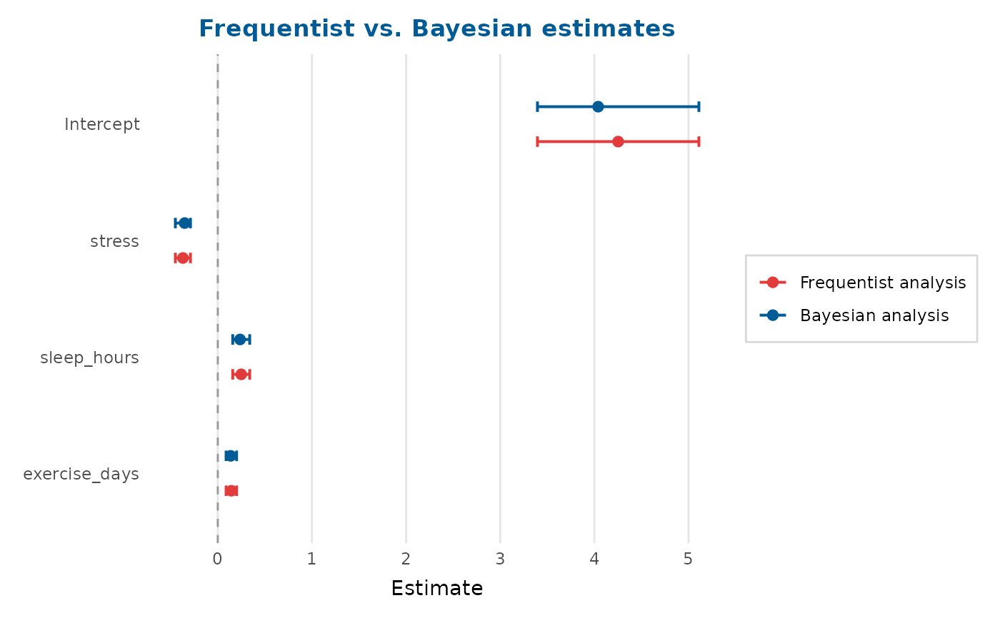

Plot frequentist and Bayesian estimates together
Source:R/frequentist_bayesian_plot.R
frequentist_bayesian_plot.RdPresents the estimates from a frequentist model and a Bayesian model side by
side on one forest plot, in the familiar red (frequentist) and blue
(Bayesian) styling. This is a convenience wrapper around
compare_models().
Usage
frequentist_bayesian_plot(
frequentist,
bayesian,
conf_level = 0.95,
labels = NULL,
interaction = c("times", "asterisk", "colon", "space"),
intercept = TRUE,
note_frequentist_no_prior = FALSE,
vertical_line_at_x = 0,
title = NULL,
subtitle = NULL,
x_lab = "Estimate",
...
)Arguments
- frequentist
A frequentist model (e.g. from
lm,glmorlmerTest::lmer) or a tidy data frame of estimates.- bayesian
A Bayesian model or a tidy data frame of posterior summaries.
- conf_level
Confidence/credible level for models.
- labels, interaction, intercept
See
compare_models().interceptdefaults toTRUEhere, matching the original behaviour.- note_frequentist_no_prior
If
TRUE, append "(no prior)" to the frequentist legend label – useful when the title names the Bayesian prior.- vertical_line_at_x
Position of the vertical reference line.
- title, subtitle, x_lab
Title, subtitle and x-axis label.
- ...
Further arguments passed to
compare_models().
Value
A ggplot2::ggplot object.
Details
This is a modernised, self-contained successor to the original
frequentist_bayesian_plot() gist. Rather than requiring a pre-built
brms::mcmc_plot() object, it accepts either fitted models or, more
commonly for Bayesian fits, a tidy data frame of posterior summaries (with
columns such as term, estimate, conf.low/conf.high, or the
Estimate, l-95% CI, u-95% CI produced by brms::fixef()). The
function aligns terms by name, so small differences in naming between the
two sources only need to be reconciled in the term labels.
Examples
# Same model fitted two ways here purely so the example is self-contained;
# in practice `bayesian` would come from brms, rstanarm, etc.
freq <- lm(life_satisfaction ~ stress + sleep_hours + exercise_days,
data = wellbeing_survey)
# A stand-in "Bayesian" summary as a tidy data frame:
bayes <- tidy_estimates(freq)
bayes$estimate <- bayes$estimate * 0.95
frequentist_bayesian_plot(freq, bayes,
title = "Frequentist vs. Bayesian estimates")
#> `height` was translated to `width`.
